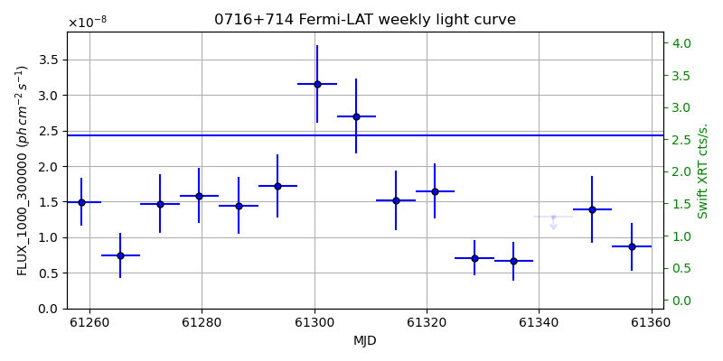

LAT Lightcurve site: https://fermi.gsfc.nasa.gov/ssc/data/access/lat/msl_lc/source/0716p714
Swift site: https://www.swift.psu.edu/monitoring/source.php?source=S50716+714
NED: Query
Time of last update of this page: UT: 2026-11-20 16:18 (MJD: 61364.680)
| Property | Value |
|---|---|
| R.A. | 7:21:43.20 |
| Dec. | 71:21:00.0 |
| z | 0.310 |
| 3FGL SpectrumType | LogParabola |
| 3FGL PL Index | |
| 3FGL Flux_100_300000 | 2.31e-07 1 / (s cm2) |
| 3FGL Flux_1000_300000 | 2.44e-08 1 / (s cm2) |
| 3FGL Flux >200 GeV | 6.00e-11 1 / (s cm2) |
| 3FGL Extrap. Crab >200 GeV | 0.25 |
| 3FGL Flux After EBL Absorption >200GeV | 1.88e-11 1 / (s cm2) |
| 3FGL EBL Crab Fraction >200GeV | 0.08 |
| MJD | dMJD | Flux | dFlux | Frac3FGL | FracCrab>200GeV | EBLFracCrab>200GeV |
|---|---|---|---|---|---|---|
| 61359.50 | 0.50 | 1.49e-07 | 0.00e+00 | 0.00 | 0.00 | 0.00 |
| 61360.50 | 0.50 | 1.03e-07 | 0.00e+00 | 0.00 | 0.00 | 0.00 |
| 61361.50 | 0.50 | 2.26e-07 | 0.00e+00 | 0.00 | 0.00 | 0.00 |
| 61362.50 | 0.50 | 2.74e-07 | 0.00e+00 | 0.00 | 0.00 | 0.00 |
| 61363.50 | 0.50 | 1.24e-07 | 0.00e+00 | 0.00 | 0.00 | 0.00 |

| MJD | dMJD | Flux | dFlux | Frac3FGL | FracCrab>200GeV | EBLFracCrab>200GeV |
|---|---|---|---|---|---|---|
| 61328.50 | 3.50 | 8.14e-08 | 2.18e-08 | 0.35 | 0.09 | 0.03 |
| 61335.50 | 3.50 | 9.54e-08 | 2.71e-08 | 0.41 | 0.11 | 0.03 |
| 61342.50 | 3.50 | 1.01e-07 | 2.67e-08 | 0.44 | 0.11 | 0.03 |
| 61349.50 | 3.50 | 1.73e-07 | 3.44e-08 | 0.75 | 0.19 | 0.06 |
| 61356.50 | 3.50 | 6.77e-08 | 2.43e-08 | 0.29 | 0.07 | 0.02 |

| MJD | dMJD | Flux | dFlux | Frac3FGL | FracCrab>200GeV | EBLFracCrab>200GeV |
|---|---|---|---|---|---|---|
| 61359.50 | 0.50 | 5.90e-08 | 0.00e+00 | 0.00 | 0.00 | 0.00 |
| 61360.50 | 0.50 | 1.17e-08 | 0.00e+00 | 0.00 | 0.00 | 0.00 |
| 61361.50 | 0.50 | 1.50e-08 | 0.00e+00 | 0.00 | 0.00 | 0.00 |
| 61362.50 | 0.50 | 4.65e-08 | 0.00e+00 | 0.00 | 0.00 | 0.00 |
| 61363.50 | 0.50 | 3.47e-08 | 0.00e+00 | 0.00 | 0.00 | 0.00 |

| MJD | dMJD | Flux | dFlux | Frac3FGL | FracCrab>200GeV | EBLFracCrab>200GeV |
|---|---|---|---|---|---|---|
| 61328.50 | 3.50 | 7.12e-09 | 2.47e-09 | 0.29 | 0.07 | 0.02 |
| 61335.50 | 3.50 | 6.64e-09 | 2.77e-09 | 0.27 | 0.07 | 0.02 |
| 61342.50 | 3.50 | 1.29e-08 | 0.00e+00 | 0.00 | 0.00 | 0.00 |
| 61349.50 | 3.50 | 1.39e-08 | 4.73e-09 | 0.57 | 0.15 | 0.05 |
| 61356.50 | 3.50 | 8.68e-09 | 3.40e-09 | 0.36 | 0.09 | 0.03 |
--------------------------------------------------------- Using user-supplied coords: 7:21:43.20 71:21:00.0 2000 --------------------------------------------------------- FLWO UT night of: 2026-11-21 Local Sid. @ Midnight: 03:37 Sunset (-15.0) (local, UT): 18:33 01:33 Sunrise (-15.0) (local, UT): 05:47 12:47 Moonrise (local, UT): Moonset (local, UT): 03:40 10:40 Moon phase: 0.85 --------------------------------------------------------- AzTime LSID UT Obj_el Obj_az Mn_el Mn_az Sep. --------------------------------------------------------- 18:33 22:09 01:33 17.0 12.7 47.9 117.4 86.9 19:03 22:39 02:03 18.5 14.7 53.3 125.0 86.7 19:33 23:09 02:33 20.2 16.5 58.2 134.7 86.6 20:03 23:39 03:03 22.1 18.1 62.3 146.9 86.4 20:33 00:09 03:33 24.2 19.4 65.1 162.1 86.2 21:03 00:39 04:03 26.4 20.5 66.3 179.7 86.0 21:33 01:09 04:33 28.7 21.4 65.4 197.5 85.9 22:03 01:39 05:03 31.0 21.9 62.9 213.2 85.7 22:33 02:09 05:33 33.4 22.1 59.0 225.9 85.5 23:03 02:39 06:03 35.8 22.0 54.2 235.9 85.4 23:33 03:09 06:33 38.2 21.5 48.9 243.9 85.2 00:03 03:39 07:03 40.5 20.5 43.2 250.4 85.0 00:33 04:10 07:33 42.7 19.1 37.3 255.9 84.9 01:03 04:40 08:03 44.7 17.3 31.2 260.7 84.7 01:33 05:10 08:33 46.4 14.9 25.1 265.1 84.5 02:03 05:40 09:03 48.0 12.2 19.0 269.2 84.4 02:33 06:10 09:33 49.1 9.0 12.9 273.0 84.2 03:03 06:40 10:03 49.9 5.5 6.8 276.9 84.0 03:33 07:10 10:33 50.3 1.8 1.0 280.7 83.8 04:03 07:40 11:03 50.3 358.0 -4.9 284.7 83.6 04:33 08:10 11:33 49.9 354.3 -11.1 288.8 83.4 05:03 08:40 12:03 49.1 350.8 -16.8 293.2 83.2 05:33 09:10 12:33 47.9 347.7 -22.3 298.1 83.0 05:47 09:25 12:47 47.2 346.3 -24.8 300.5 82.9 --------------------------------------------------------- Source never above horizon of 55.0 deg. Dark hours >55 deg.: 0.00